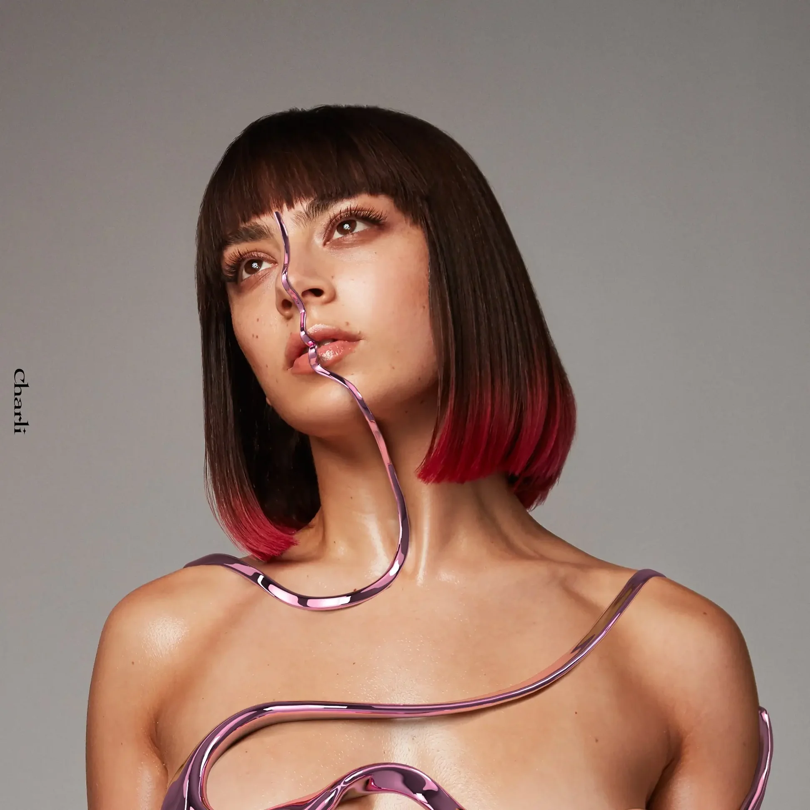
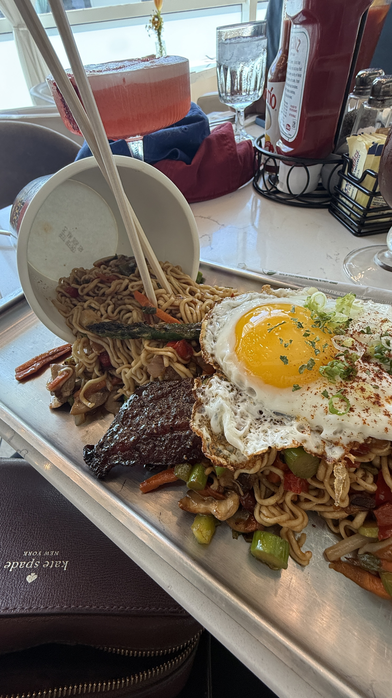
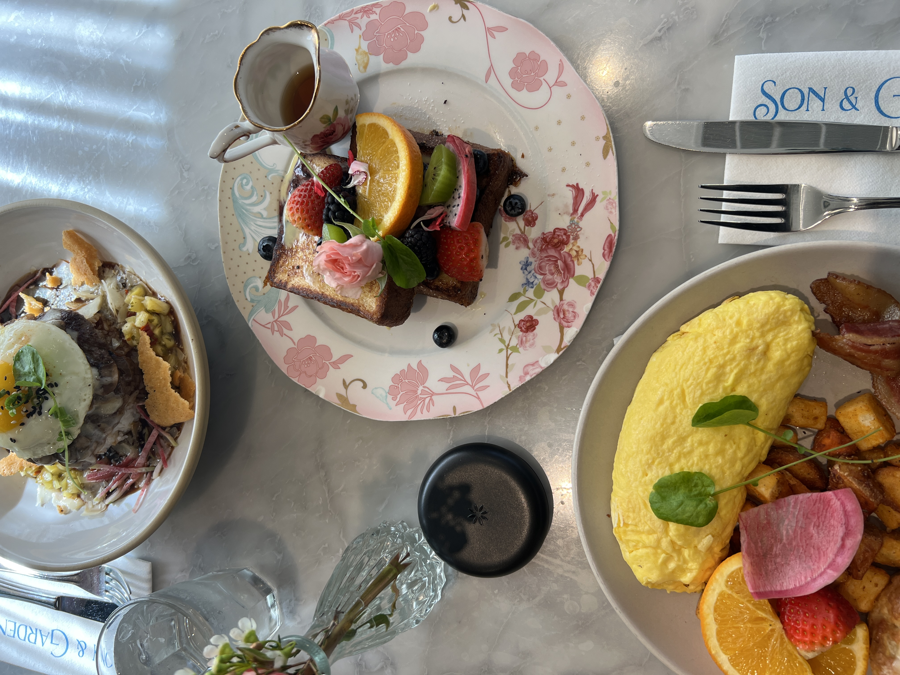
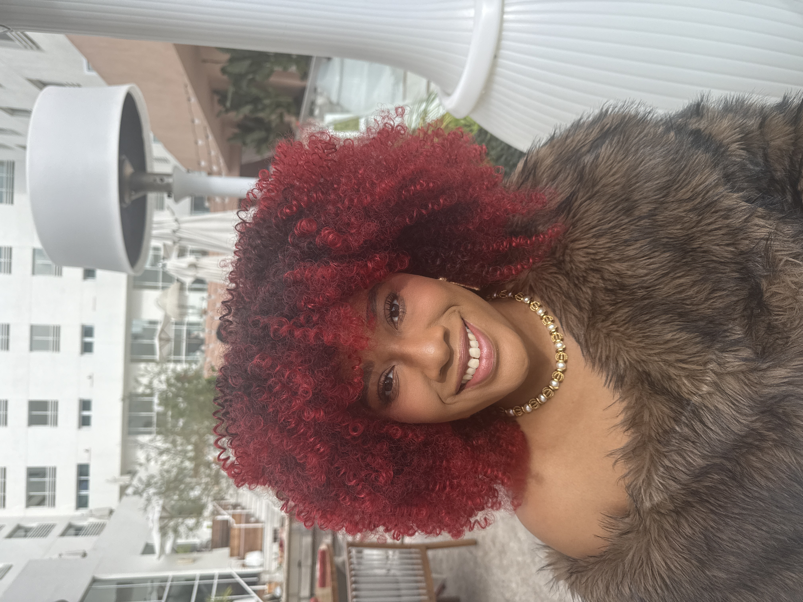
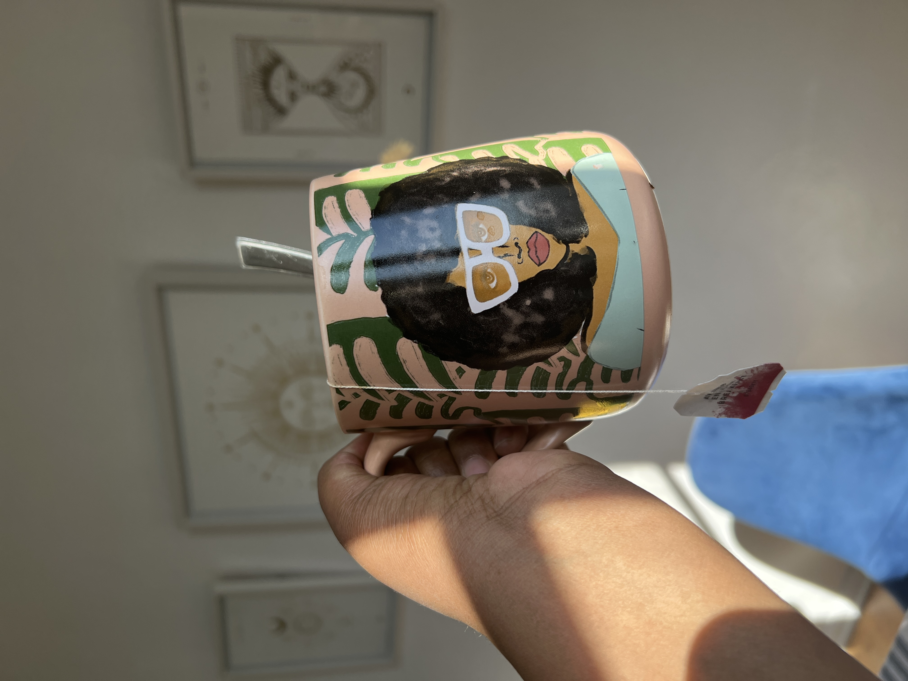
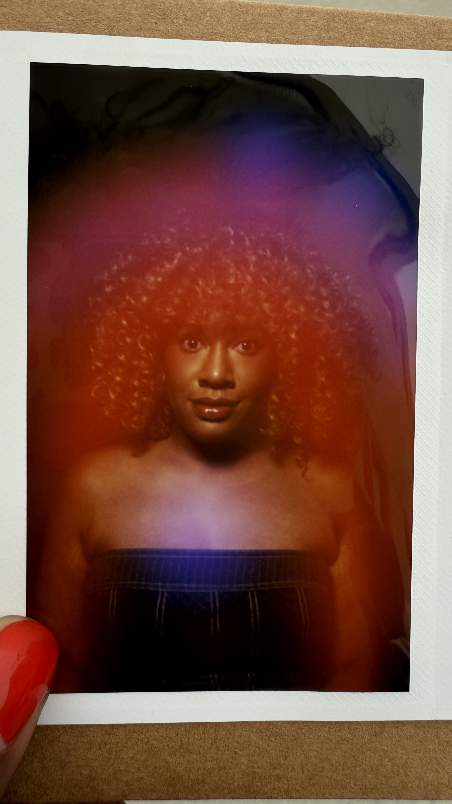
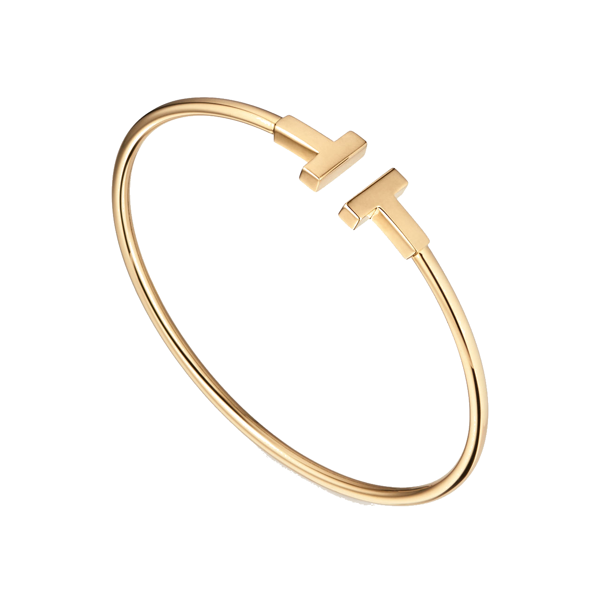
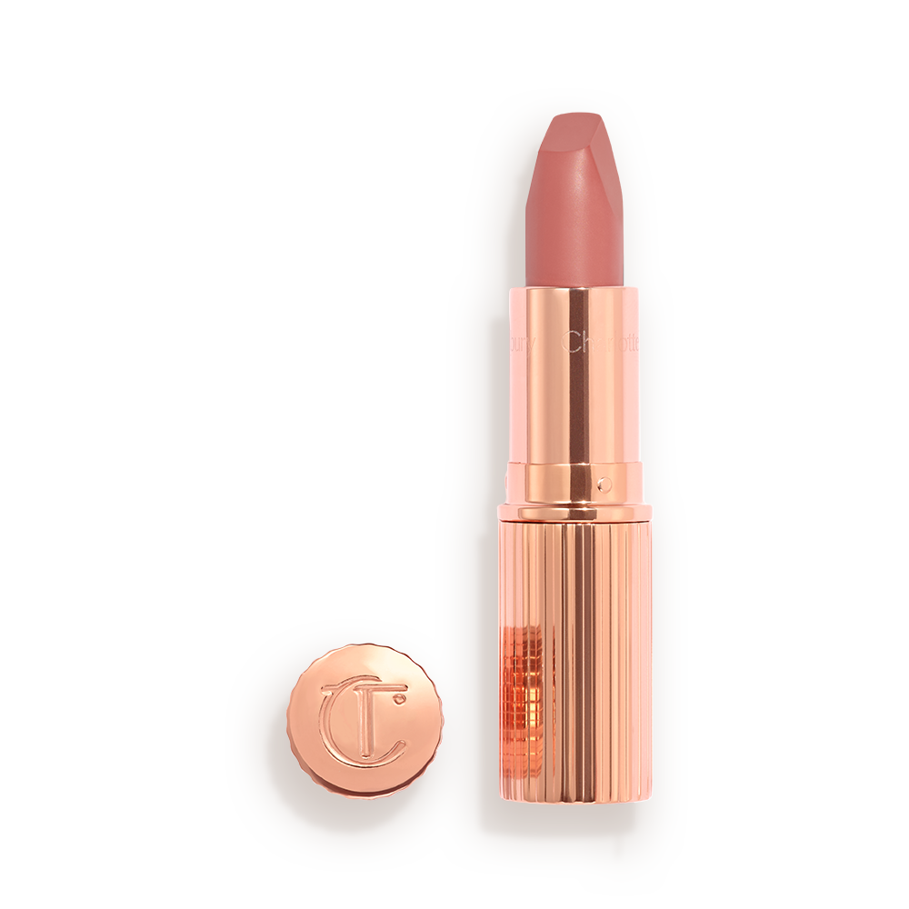
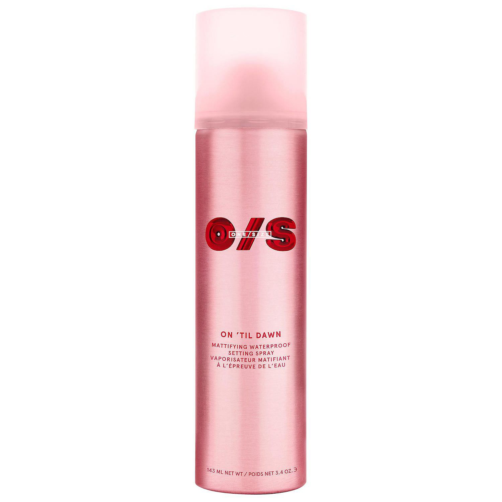

My passion for design all started with a drawing book I got when I was 7. Growing up, things weren't always easy in a low-income family, but those pages were where I could be myself and just escape for a bit.
High school was where things got real with design. I dived into graphic and web design classes and fell for the digital world. But there was a problem — I couldn't afford a laptop to use at home. But I didn't let that stop me. I decided to sell candy bars at school. It took a while, but I finally saved enough for my own laptop and that all-important Adobe software. Talk about a lesson in determination!
College was where things took off. I went for a design degree and found my creative voice as well as gained knowledge in critical and creative thinking, visual and aesthetic sense, and dynamics of business and technology and integrated those learnings through design. Plus I got to work at jobs that taught me something new about teamwork, carrying out my designs from start to finish, and designing experiences that make a difference.
For me, product design is this incredible mash-up of art, technology, and understanding what makes people tick. It's more than a job; it's my passion and, dare I say, my calling.
I'm all about diving head-first into the product design world and keeping up with the latest and greatest. Always up for a challenge and keen to keep learning.
If you're into talking about design, job opportunities, or just want to say hi, feel free to message me via email or LinkedIn. Let's see what cool things we can create together!